fastica_centered_02
Matthew Stephens
2025-11-18
Last updated: 2025-11-18
Checks: 7 0
Knit directory: misc/analysis/
This reproducible R Markdown analysis was created with workflowr (version 1.7.1). The Checks tab describes the reproducibility checks that were applied when the results were created. The Past versions tab lists the development history.
Great! Since the R Markdown file has been committed to the Git repository, you know the exact version of the code that produced these results.
Great job! The global environment was empty. Objects defined in the global environment can affect the analysis in your R Markdown file in unknown ways. For reproduciblity it’s best to always run the code in an empty environment.
The command set.seed(1) was run prior to running the
code in the R Markdown file. Setting a seed ensures that any results
that rely on randomness, e.g. subsampling or permutations, are
reproducible.
Great job! Recording the operating system, R version, and package versions is critical for reproducibility.
Nice! There were no cached chunks for this analysis, so you can be confident that you successfully produced the results during this run.
Great job! Using relative paths to the files within your workflowr project makes it easier to run your code on other machines.
Great! You are using Git for version control. Tracking code development and connecting the code version to the results is critical for reproducibility.
The results in this page were generated with repository version 882882a. See the Past versions tab to see a history of the changes made to the R Markdown and HTML files.
Note that you need to be careful to ensure that all relevant files for
the analysis have been committed to Git prior to generating the results
(you can use wflow_publish or
wflow_git_commit). workflowr only checks the R Markdown
file, but you know if there are other scripts or data files that it
depends on. Below is the status of the Git repository when the results
were generated:
Ignored files:
Ignored: .DS_Store
Ignored: .Rhistory
Ignored: .Rproj.user/
Ignored: analysis/.RData
Ignored: analysis/.Rhistory
Ignored: analysis/ALStruct_cache/
Ignored: data/.Rhistory
Ignored: data/methylation-data-for-matthew.rds
Ignored: data/pbmc/
Ignored: data/pbmc_purified.RData
Untracked files:
Untracked: .dropbox
Untracked: Icon
Untracked: analysis/GHstan.Rmd
Untracked: analysis/GTEX-cogaps.Rmd
Untracked: analysis/PACS.Rmd
Untracked: analysis/Rplot.png
Untracked: analysis/SPCAvRP.rmd
Untracked: analysis/abf_comparisons.Rmd
Untracked: analysis/admm_02.Rmd
Untracked: analysis/admm_03.Rmd
Untracked: analysis/bispca.Rmd
Untracked: analysis/cache/
Untracked: analysis/cholesky.Rmd
Untracked: analysis/compare-transformed-models.Rmd
Untracked: analysis/cormotif.Rmd
Untracked: analysis/cp_ash.Rmd
Untracked: analysis/eQTL.perm.rand.pdf
Untracked: analysis/eb_power2.Rmd
Untracked: analysis/eb_prepilot.Rmd
Untracked: analysis/eb_var.Rmd
Untracked: analysis/ebpmf1.Rmd
Untracked: analysis/ebpmf_sla_text.Rmd
Untracked: analysis/ebspca_sims.Rmd
Untracked: analysis/explore_psvd.Rmd
Untracked: analysis/fa_check_identify.Rmd
Untracked: analysis/fa_iterative.Rmd
Untracked: analysis/fastica_heated.Rmd
Untracked: analysis/flash_cov_overlapping_groups_init.Rmd
Untracked: analysis/flash_test_tree.Rmd
Untracked: analysis/flashier_newgroups.Rmd
Untracked: analysis/flashier_nmf_triples.Rmd
Untracked: analysis/flashier_pbmc.Rmd
Untracked: analysis/flashier_snn_shifted_prior.Rmd
Untracked: analysis/greedy_ebpmf_exploration_00.Rmd
Untracked: analysis/ieQTL.perm.rand.pdf
Untracked: analysis/lasso_em_03.Rmd
Untracked: analysis/m6amash.Rmd
Untracked: analysis/mash_bhat_z.Rmd
Untracked: analysis/mash_ieqtl_permutations.Rmd
Untracked: analysis/methylation_example.Rmd
Untracked: analysis/mixsqp.Rmd
Untracked: analysis/mr.ash_lasso_init.Rmd
Untracked: analysis/mr.mash.test.Rmd
Untracked: analysis/mr_ash_modular.Rmd
Untracked: analysis/mr_ash_parameterization.Rmd
Untracked: analysis/mr_ash_ridge.Rmd
Untracked: analysis/mv_gaussian_message_passing.Rmd
Untracked: analysis/nejm.Rmd
Untracked: analysis/nmf_bg.Rmd
Untracked: analysis/nonneg_underapprox.Rmd
Untracked: analysis/normal_conditional_on_r2.Rmd
Untracked: analysis/normalize.Rmd
Untracked: analysis/pbmc.Rmd
Untracked: analysis/pca_binary_weighted.Rmd
Untracked: analysis/pca_l1.Rmd
Untracked: analysis/poisson_nmf_approx.Rmd
Untracked: analysis/poisson_shrink.Rmd
Untracked: analysis/poisson_transform.Rmd
Untracked: analysis/qrnotes.txt
Untracked: analysis/ridge_iterative_02.Rmd
Untracked: analysis/ridge_iterative_splitting.Rmd
Untracked: analysis/samps/
Untracked: analysis/sc_bimodal.Rmd
Untracked: analysis/shrinkage_comparisons_changepoints.Rmd
Untracked: analysis/susie_cov.Rmd
Untracked: analysis/susie_en.Rmd
Untracked: analysis/susie_z_investigate.Rmd
Untracked: analysis/svd-timing.Rmd
Untracked: analysis/temp.RDS
Untracked: analysis/temp.Rmd
Untracked: analysis/test-figure/
Untracked: analysis/test.Rmd
Untracked: analysis/test.Rpres
Untracked: analysis/test.md
Untracked: analysis/test_qr.R
Untracked: analysis/test_sparse.Rmd
Untracked: analysis/tree_dist_top_eigenvector.Rmd
Untracked: analysis/z.txt
Untracked: code/coordinate_descent_symNMF.R
Untracked: code/multivariate_testfuncs.R
Untracked: code/rqb.hacked.R
Untracked: data/4matthew/
Untracked: data/4matthew2/
Untracked: data/E-MTAB-2805.processed.1/
Untracked: data/ENSG00000156738.Sim_Y2.RDS
Untracked: data/GDS5363_full.soft.gz
Untracked: data/GSE41265_allGenesTPM.txt
Untracked: data/Muscle_Skeletal.ACTN3.pm1Mb.RDS
Untracked: data/P.rds
Untracked: data/Thyroid.FMO2.pm1Mb.RDS
Untracked: data/bmass.HaemgenRBC2016.MAF01.Vs2.MergedDataSources.200kRanSubset.ChrBPMAFMarkerZScores.vs1.txt.gz
Untracked: data/bmass.HaemgenRBC2016.Vs2.NewSNPs.ZScores.hclust.vs1.txt
Untracked: data/bmass.HaemgenRBC2016.Vs2.PreviousSNPs.ZScores.hclust.vs1.txt
Untracked: data/eb_prepilot/
Untracked: data/finemap_data/fmo2.sim/b.txt
Untracked: data/finemap_data/fmo2.sim/dap_out.txt
Untracked: data/finemap_data/fmo2.sim/dap_out2.txt
Untracked: data/finemap_data/fmo2.sim/dap_out2_snp.txt
Untracked: data/finemap_data/fmo2.sim/dap_out_snp.txt
Untracked: data/finemap_data/fmo2.sim/data
Untracked: data/finemap_data/fmo2.sim/fmo2.sim.config
Untracked: data/finemap_data/fmo2.sim/fmo2.sim.k
Untracked: data/finemap_data/fmo2.sim/fmo2.sim.k4.config
Untracked: data/finemap_data/fmo2.sim/fmo2.sim.k4.snp
Untracked: data/finemap_data/fmo2.sim/fmo2.sim.ld
Untracked: data/finemap_data/fmo2.sim/fmo2.sim.snp
Untracked: data/finemap_data/fmo2.sim/fmo2.sim.z
Untracked: data/finemap_data/fmo2.sim/pos.txt
Untracked: data/logm.csv
Untracked: data/m.cd.RDS
Untracked: data/m.cdu.old.RDS
Untracked: data/m.new.cd.RDS
Untracked: data/m.old.cd.RDS
Untracked: data/mainbib.bib.old
Untracked: data/mat.csv
Untracked: data/mat.txt
Untracked: data/mat_new.csv
Untracked: data/matrix_lik.rds
Untracked: data/paintor_data/
Untracked: data/running_data_chris.csv
Untracked: data/running_data_matthew.csv
Untracked: data/temp.txt
Untracked: data/y.txt
Untracked: data/y_f.txt
Untracked: data/zscore_jointLCLs_m6AQTLs_susie_eQTLpruned.rds
Untracked: data/zscore_jointLCLs_random.rds
Untracked: explore_udi.R
Untracked: output/fit.k10.rds
Untracked: output/fit.nn.pbmc.purified.rds
Untracked: output/fit.nn.rds
Untracked: output/fit.nn.s.001.rds
Untracked: output/fit.nn.s.01.rds
Untracked: output/fit.nn.s.1.rds
Untracked: output/fit.nn.s.10.rds
Untracked: output/fit.snn.s.001.rds
Untracked: output/fit.snn.s.01.nninit.rds
Untracked: output/fit.snn.s.01.rds
Untracked: output/fit.varbvs.RDS
Untracked: output/fit2.nn.pbmc.purified.rds
Untracked: output/glmnet.fit.RDS
Untracked: output/snn07.txt
Untracked: output/snn34.txt
Untracked: output/test.bv.txt
Untracked: output/test.gamma.txt
Untracked: output/test.hyp.txt
Untracked: output/test.log.txt
Untracked: output/test.param.txt
Untracked: output/test2.bv.txt
Untracked: output/test2.gamma.txt
Untracked: output/test2.hyp.txt
Untracked: output/test2.log.txt
Untracked: output/test2.param.txt
Untracked: output/test3.bv.txt
Untracked: output/test3.gamma.txt
Untracked: output/test3.hyp.txt
Untracked: output/test3.log.txt
Untracked: output/test3.param.txt
Untracked: output/test4.bv.txt
Untracked: output/test4.gamma.txt
Untracked: output/test4.hyp.txt
Untracked: output/test4.log.txt
Untracked: output/test4.param.txt
Untracked: output/test5.bv.txt
Untracked: output/test5.gamma.txt
Untracked: output/test5.hyp.txt
Untracked: output/test5.log.txt
Untracked: output/test5.param.txt
Unstaged changes:
Modified: .gitignore
Modified: analysis/eb_snmu.Rmd
Modified: analysis/ebnm_binormal.Rmd
Modified: analysis/ebpower.Rmd
Modified: analysis/fastica_centered.Rmd
Modified: analysis/flashier_log1p.Rmd
Modified: analysis/flashier_sla_text.Rmd
Modified: analysis/logistic_z_scores.Rmd
Modified: analysis/mr_ash_pen.Rmd
Modified: analysis/nmu_em.Rmd
Modified: analysis/susie_flash.Rmd
Modified: analysis/tap_free_energy.Rmd
Modified: misc.Rproj
Note that any generated files, e.g. HTML, png, CSS, etc., are not included in this status report because it is ok for generated content to have uncommitted changes.
These are the previous versions of the repository in which changes were
made to the R Markdown (analysis/fastica_centered_02.Rmd)
and HTML (docs/fastica_centered_02.html) files. If you’ve
configured a remote Git repository (see ?wflow_git_remote),
click on the hyperlinks in the table below to view the files as they
were in that past version.
| File | Version | Author | Date | Message |
|---|---|---|---|---|
| Rmd | 882882a | Matthew Stephens | 2025-11-18 | workflowr::wflow_publish("fastica_centered_02.Rmd") |
Introduction
I found previously that the original fastICA algorithm seems to have trouble finding groups that are unbalanced. I believe that this is because the log-cosh objective function favours symmetry. ie maximizing or minimizing \(\log \cosh (X'w)\) (subject to \(w'w=1\), which implies ||X’w||= 1 if \(XX'=I\)) tends to find symmetric \(X'w\). I want to try to fix this using an intercept. That is, maximize \(\log \cosh (X'w + c)\) over both \(w\) and \(c\). I made an initial attempt but I now believe that was flawed. The issue is that simply adding in a c makes the objective unbounded, and I actually ended up minimising over c while maximising over w, which is a mess. Here I’m going to try a different approach, which simply constriains ||X’w + c||=1, which is equivalent to adding a row of 1s to the whitened matrix X.
Illustrating the problem
Before trying to fix the problem, let’s illustrate it again. First here is a simple single-unit ICA function and preprocessing (for centering and whitening).
fastica_r1update = function(X,w){
w= w/sqrt(sum(w^2)) # redundant, but just to be safe
P = t(X) %*% w
G = tanh(P)
G2 = 1-tanh(P)^2
w = X %*% G - sum(G2) * w
w = w/sqrt(sum(w^2)) # to ensure the returned value satisfies constraints
return(w)
}
preprocess = function(X, n.comp=10){
n <- nrow(X)
p <- ncol(X)
X <- scale(X, scale = FALSE)
X <- t(X)
## This appears to be equivalant to X1 = t(svd(X)$v[,1:n.comp])
V <- X %*% t(X)/n
s <- La.svd(V)
D <- diag(c(1/sqrt(s$d)))
K <- D %*% t(s$u)
K <- matrix(K[1:n.comp, ], n.comp, p)
X1 <- K %*% X
return(X1)
}
compute_objective = function(X,w){
P = t(X) %*% w
return(mean(log(cosh(P))))
}Three group simulation
Here I simulate 3 groups, with only 20 members each.
K=3
p = 1000
n = 100
set.seed(1)
L = matrix(-1,nrow=n,ncol=K)
for(i in 1:K){L[sample(1:n,20),i]=1}
FF = matrix(rnorm(p*K), nrow = p, ncol=K)
X = L %*% t(FF) + rnorm(n*p,0,0.01)
plot(X %*% FF[,1])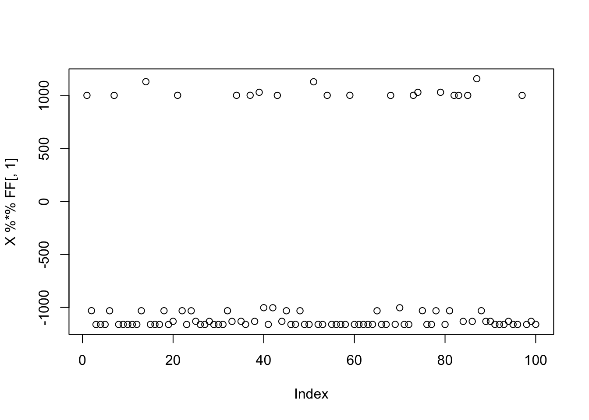
X1 = preprocess(X)fastICA
Running single unit fastICA on these data does not pick out a single source:
w = rnorm(nrow(X1))
for(i in 1:100)
w = fastica_r1update(X1,w)
cor(L,t(X1) %*% w) [,1]
[1,] -0.09720849
[2,] 0.39491239
[3,] 0.06322010plot(t(X1) %*% w)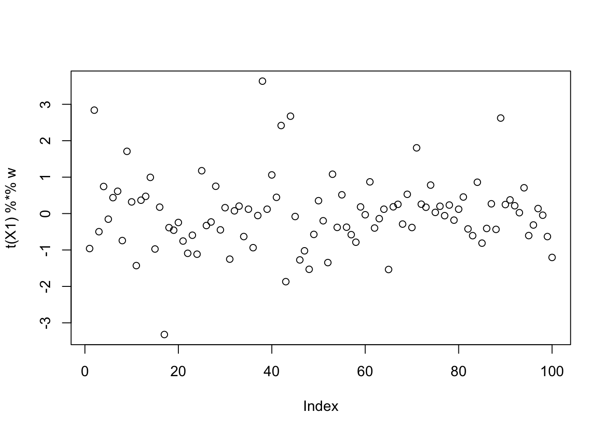
compute_objective(X1,w)[1] 0.3320872Try initializing near a true source. Note that the initialization, because everything is centered, is mean 0, but because it is so skew it is not “centered” on 0. Furthermore, its expected log(cosh) value is close to a Gaussian even though this source is very non-gaussian!
init_w = X1 %*% L[,1]
init_w = init_w/sqrt(sum(init_w^2))
plot(t(X1) %*% init_w,main="initial value of source estimate")
abline(h=0)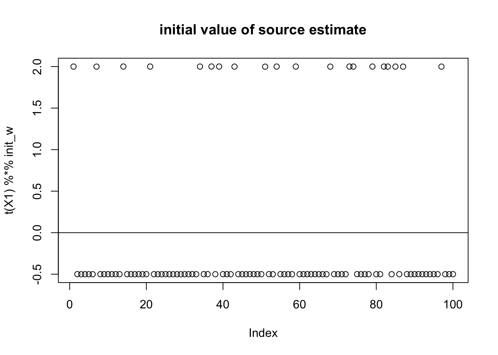
compute_objective(X1,init_w)[1] 0.3610922mean(log(cosh(rnorm(10000)))) # expected logcosh for normal[1] 0.3682596Running fastICA from this initialization finds something with a larger objective, but actually more “gaussian”. This indicates that the objective function is not doing what we want.
w = init_w
for(i in 1:100)
w = fastica_r1update(X1,w)
cor(L,t(X1) %*% w) [,1]
[1,] -0.189724426
[2,] 0.087759754
[3,] 0.008005984plot(t(X1) %*% w)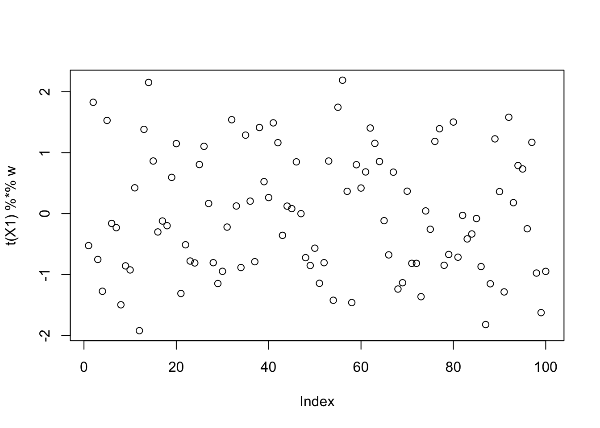
compute_objective(X1,w)[1] 0.3958629Attempt to fix the problem: noncentered fastICA
Here I attempt to fix the problem by adding an intercept to create a “noncentered” version of fastICA. We do this simply by adding a row of 1s to X1. Note that the resulting augmented X1 is still whitened (X1 X1’ is nI).
X1 = rbind(X1, rep(1,ncol(X1)))
image(X1 %*% t(X1))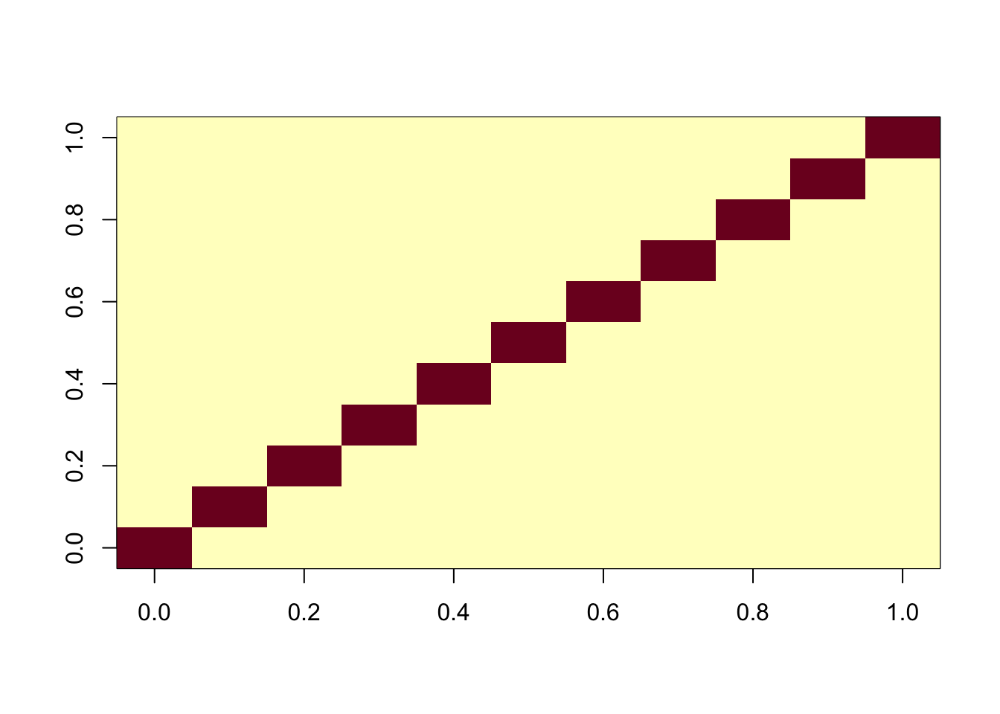
Initialize again near the true source: note that now the initial source is “centered” at 0 (but it is not mean 0). It is very close to a binary distribution on -1,1 which maximizes expected log(cosh) subject to the second moment constraint.
init_w = X1 %*% L[,1]
init_w = init_w/sqrt(sum(init_w^2))
plot(t(X1) %*% init_w,main="initial value of source estimate")
abline(h=0)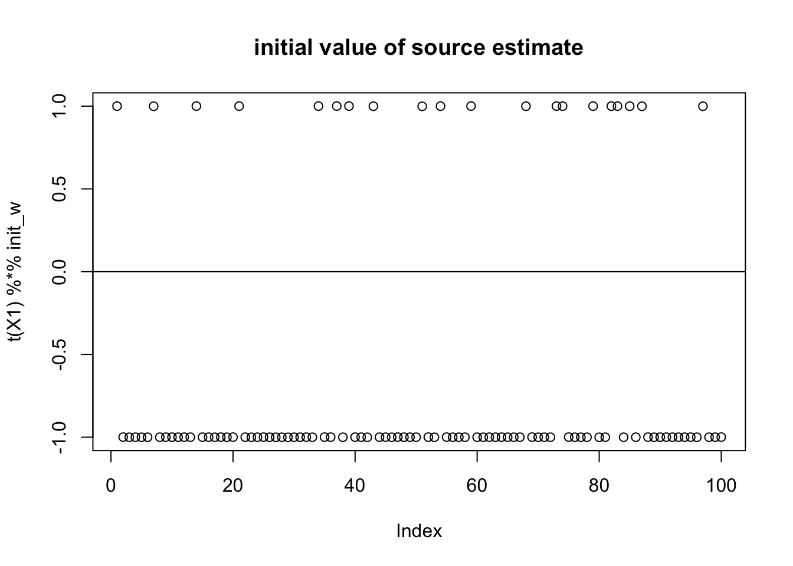
compute_objective(X1,init_w)[1] 0.4337808Running fastICA from this initialization now finds the correct source!
w = init_w
for(i in 1:100)
w = fastica_r1update(X1,w)
cor(L,t(X1) %*% w) [,1]
[1,] 9.999999e-01
[2,] 1.770293e-08
[3,] -6.250002e-02plot(t(X1) %*% w)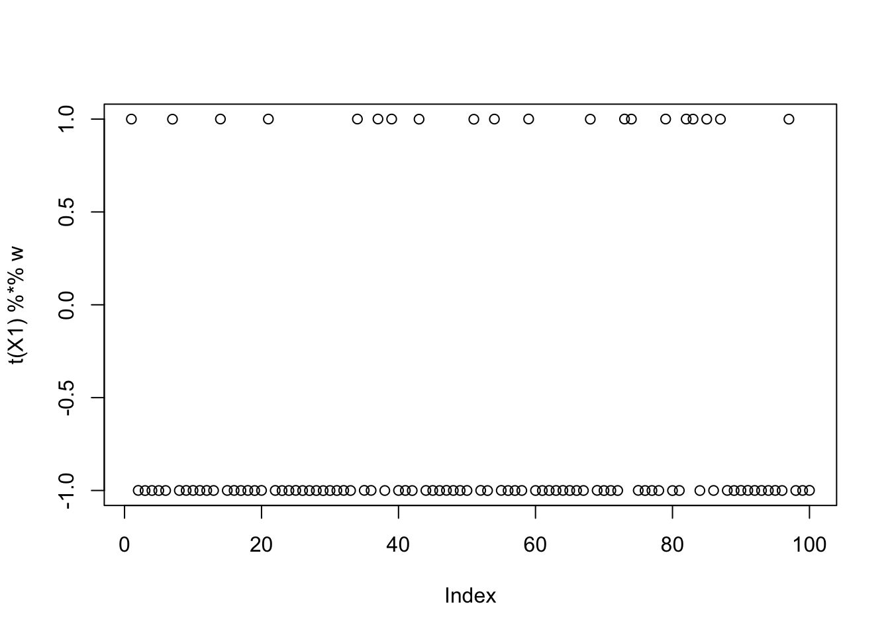
compute_objective(X1,w)[1] 0.4337808Running fastICA from a random initialization also finds a binary source:
w = rnorm(nrow(X1))
for(i in 1:100)
w = fastica_r1update(X1,w)
cor(L,t(X1) %*% w) [,1]
[1,] 1.041264e-08
[2,] 9.999999e-01
[3,] 5.026142e-09plot(t(X1) %*% w)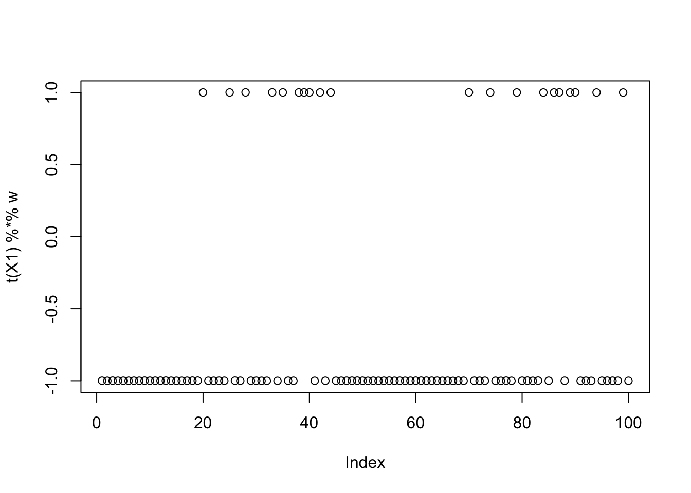
compute_objective(X1,w)[1] 0.4337808Here I run from 100 different random seeds. Most runs appear to find a binary source with objective around 0.44. But a good fraction find ones with small objective around 0.3, presumably corresponding to a minima (or local minima) of the objective.
obj = rep(0,100)
for(seed in 1:100){
set.seed(seed)
w = rnorm(nrow(X1))
for(i in 1:100)
w = fastica_r1update(X1,w)
obj[seed] = compute_objective(X1,w)
}
plot(obj)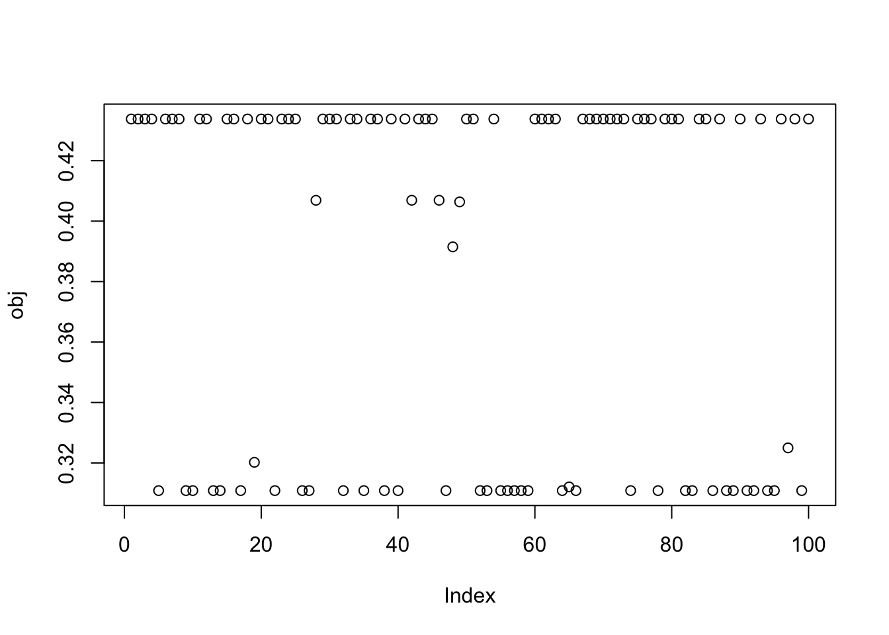
Interestingly the small values are also binary sources. Here is the seed with the smallest objective:
seed = which.min(obj)
set.seed(seed)
w = rnorm(nrow(X1))
for(i in 1:100)
w = fastica_r1update(X1,w)
plot(t(X1) %*% w)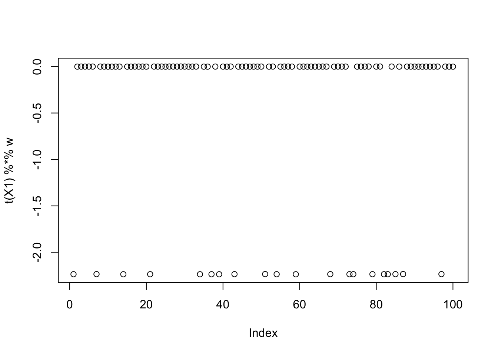
cor(L, t(X1) %*% w) [,1]
[1,] -9.999999e-01
[2,] 1.128688e-05
[3,] 6.257773e-02So: what is going on here is that there are two different representations of binary sources, the (-1,1) representaion that maximizes Elogcosh, and a (0,nonzero) representation that minimizes Elogcosh. It makes sense that a (0,nonzero) binary distribution tends to minimize log cosh: indeed among all distributions with second moment 1, the minimum of Elogcosh is 0: you put all the mass at 0, except for epsilon^2 at 1/epsilon). Also of note, presumably very unbalanced sources will produce lower Elogcosh than balanced sources (whereas in the +-1 representation the maximum Elogcosh is the same for balanced vs unbalanced sources). Thus, in order to find unbalanced sources, it might be preferable to minimize Elogcosh - something to keep in mind for the future?
More simulations
9 group simulations
Here I try 9 groups, with 20 members each, which should be harder.
K=9
p = 1000
n = 100
set.seed(1)
L = matrix(0,nrow=n,ncol=K)
for(i in 1:K){L[sample(1:n,20),i]=1}
FF = matrix(rnorm(p*K), nrow = p, ncol=K)
X = L %*% t(FF) + rnorm(n*p,0,0.01)
plot(X %*% FF[,1])
X1 = preprocess(X)
X1 = rbind(rep(1,ncol(X1)), X1)noncentered fastICA (100 random starts)
Here I try with 100 random starts - most of them reach an objective corresponding to a binary group. And we can see there seem to be 9 different solutions corresponding to the 9 groups.
obj = rep(0,100)
for(seed in 1:100){
set.seed(seed)
w = rnorm(nrow(X1))
for(i in 1:100)
w = fastica_r1update(X1,w)
obj[seed] = compute_objective(X1,w)
}
plot(obj)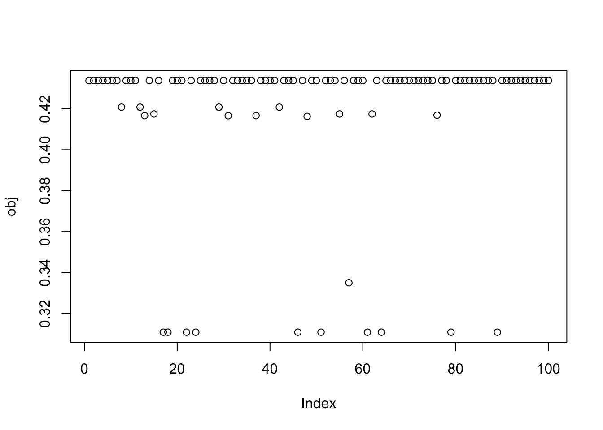
plot(sort(obj[obj>0.425]))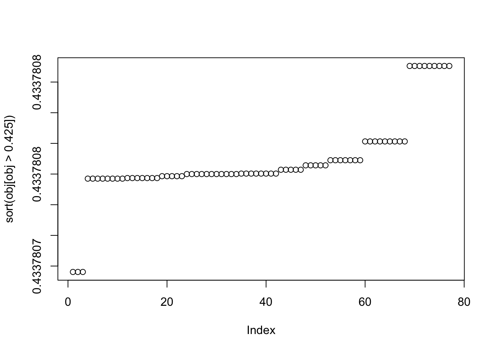
This is the top seed: it turns out to put all the objects in the same group! So that’s not ideal, but it makes sense that this is a solution. We either have to hope that this is not common, or find a way to avoid that solution?
seed= order(obj,decreasing=TRUE)[1]
set.seed(seed)
w = rnorm(nrow(X1))
for(i in 1:100)
w = fastica_r1update(X1,w)
cor(L,t(X1) %*% w) [,1]
[1,] 0.016017901
[2,] 0.032461399
[3,] 0.005764897
[4,] 0.036137004
[5,] -0.022285775
[6,] -0.004294655
[7,] -0.006035731
[8,] 0.010988125
[9,] -0.030410798plot(t(X1) %*% w)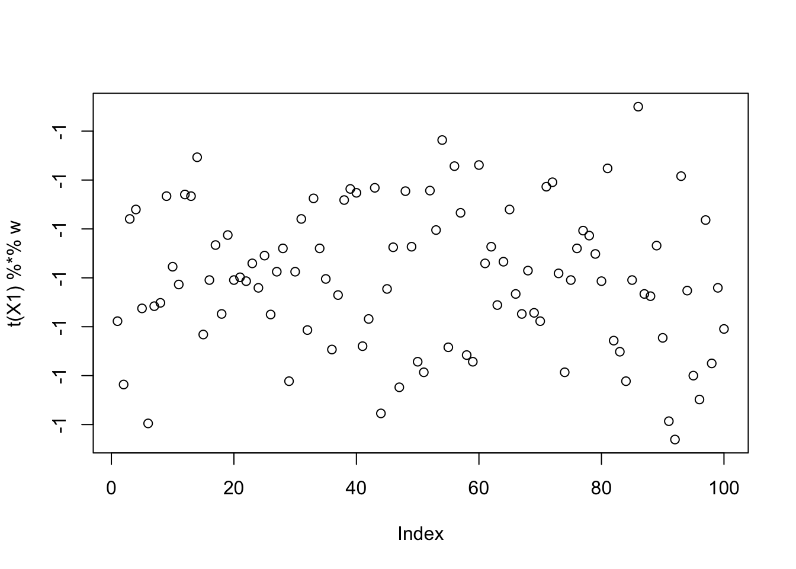
This is the 10th biggest seed: it finds one of the groups.
seed= order(obj,decreasing=TRUE)[10]
set.seed(seed)
w = rnorm(nrow(X1))
for(i in 1:100)
w = fastica_r1update(X1,w)
cor(L,t(X1) %*% w) [,1]
[1,] 1.278403e-08
[2,] 9.999998e-01
[3,] -1.415666e-07
[4,] 6.888338e-08
[5,] 6.250004e-02
[6,] 6.250003e-02
[7,] -6.250002e-02
[8,] 9.378755e-09
[9,] -6.249984e-02This is the 19th biggest seed: it finds another of the groups.
seed= order(obj,decreasing=TRUE)[19]
set.seed(seed)
w = rnorm(nrow(X1))
for(i in 1:100)
w = fastica_r1update(X1,w)
cor(L,t(X1) %*% w) [,1]
[1,] -6.249994e-02
[2,] -1.313417e-07
[3,] 9.999997e-01
[4,] 6.249995e-02
[5,] -1.790321e-07
[6,] -7.596810e-08
[7,] 1.875000e-01
[8,] 1.875001e-01
[9,] -2.500001e-01This is the smallest seed: it also finds a binary group.
seed= order(obj,decreasing=TRUE)[100]
set.seed(seed)
w = rnorm(nrow(X1))
for(i in 1:100)
w = fastica_r1update(X1,w)
cor(L,t(X1) %*% w) [,1]
[1,] 0.0002492304
[2,] -0.9999997059
[3,] 0.0001729523
[4,] -0.0001296219
[5,] -0.0624890613
[6,] -0.0625796239
[7,] 0.0624271317
[8,] 0.0001250855
[9,] 0.0624629152plot(t(X1) %*% w)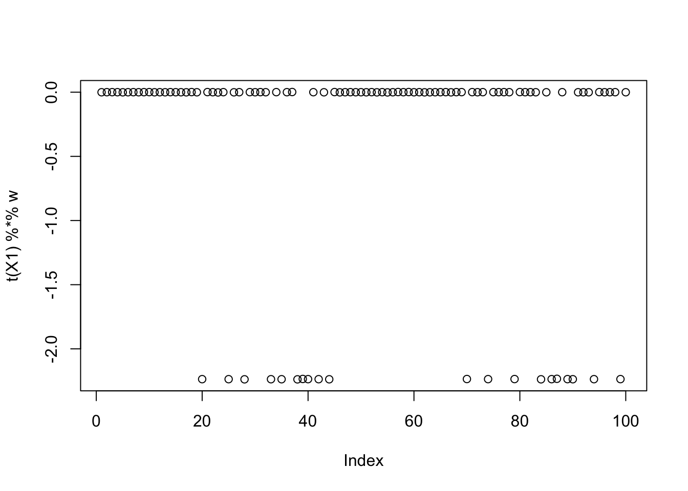
Four non-overlapping groups
Here I look at 4 equal non-overlapping groups. I’m interested in whether it converges to a single group or a combination of groups. It turns out that the majority of random starts converge to a combination of 2 groups, which is very different behavior than above. It gets me wondering whether this is because i) the non-overlapping situation, or ii) the symmetry created by the fact there are only 4 groups (2 vs 2).
set.seed(1)
n = 100
p = 1000
L = matrix(0,nrow=n,ncol=4)
L[1:25,1] = 1
L[26:50,2] = 1
L[51:75,3] = 1
L[76:100,4] = 1
FF = matrix(rnorm(p*4),nrow=p)
X = L %*% t(FF) + rnorm(n*p,0,0.01)
image(X%*% t(X))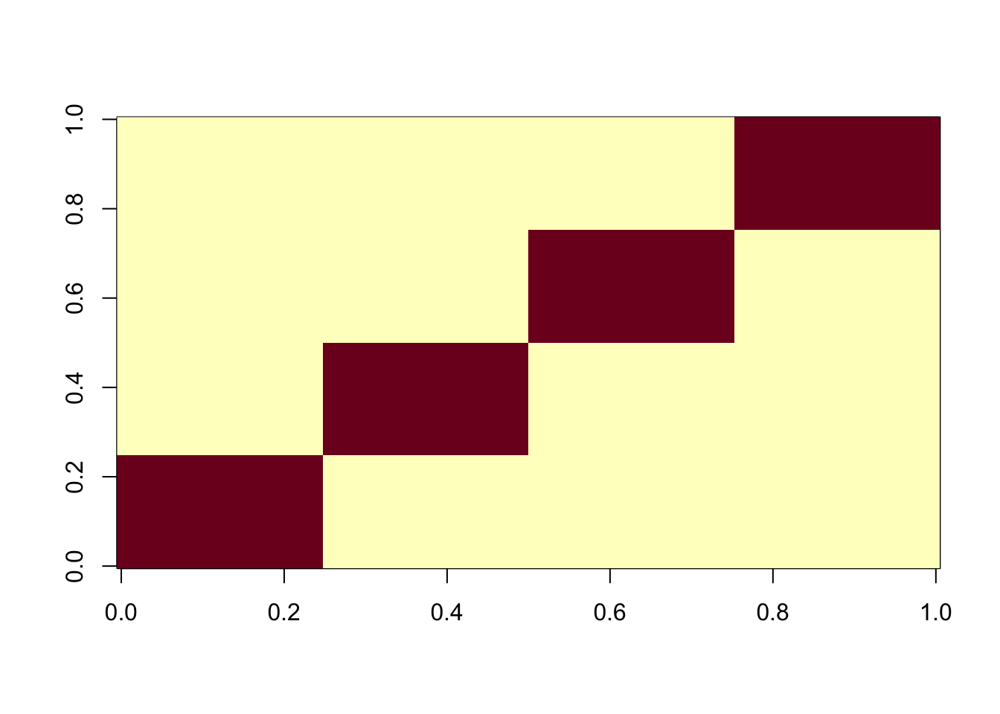
X1 = preprocess(X,n.comp=4)
X1 = rbind(rep(1,ncol(X1)), X1)Here I try with 100 random starts - all of them reach an objective corresponding to a binary group. The highest objectives correspond to a single group (the trivial solution). Then the next highest correspond to single groups. The lowest correspond to combinations of 2 groups.
obj = rep(0,100)
Lhat = matrix(nrow=100,ncol=n)
for(seed in 1:100){
set.seed(seed)
w = rnorm(nrow(X1))
for(i in 1:100)
w = fastica_r1update(X1,w)
obj[seed] = compute_objective(X1,w)
Lhat[seed,] = t(X1) %*% w
}
plot(sort(obj))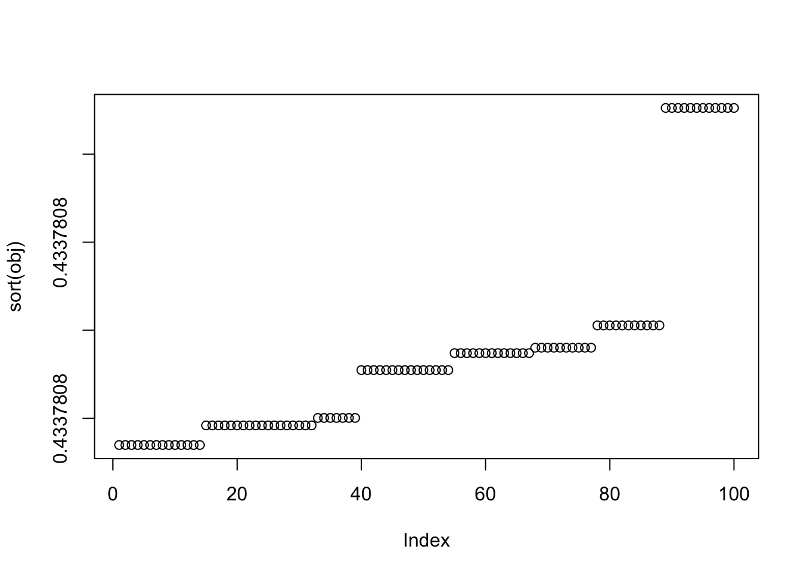
image(Lhat[order(obj,decreasing=TRUE),])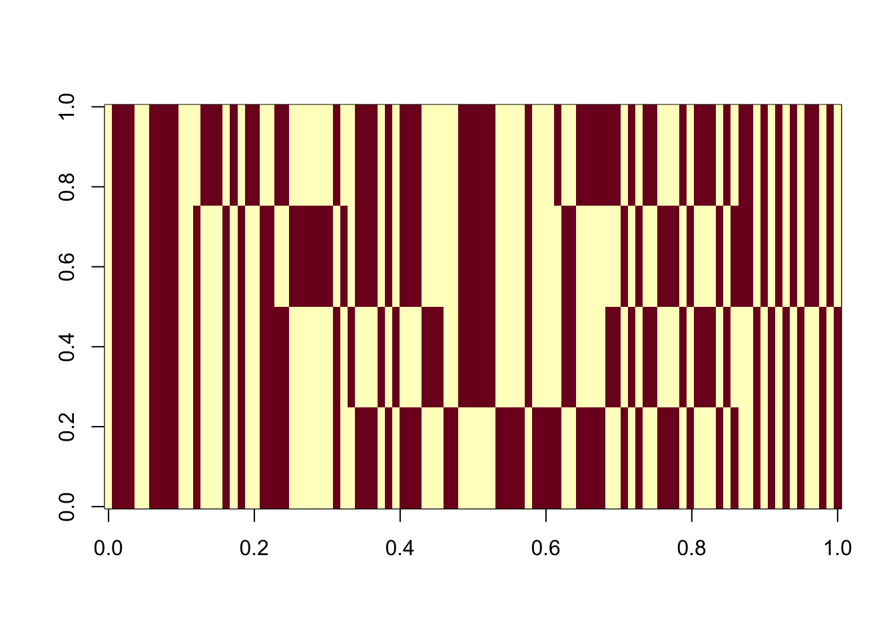
Here’s the results for the smallest objective for illustration:
seed= order(obj,decreasing=FALSE)[1]
set.seed(seed)
w = rnorm(nrow(X1))
for(i in 1:100)
w = fastica_r1update(X1,w)
plot(t(X1) %*% w)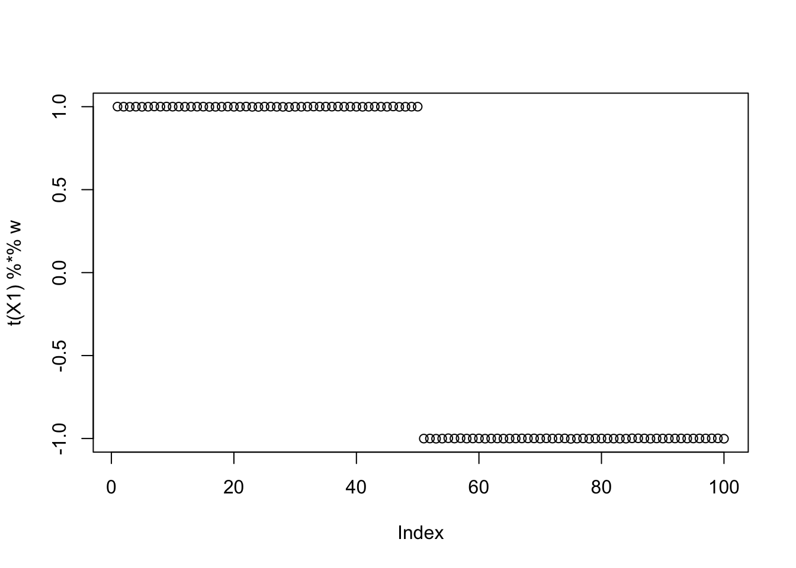
Nine non-overlapping groups
Here I look at 9 equal non-overlapping groups.
Start by creating L to be a binary matrix with 9 columns, 25*9 rows, and a single 1 in each row.
set.seed(1)
n = 225
p = 1000
L = matrix(0,nrow=n,ncol=9)
for(i in 1:9){L[((i-1)*25+1):(i*25),i] = 1}
FF = matrix(rnorm(p*9),nrow=p)
X = L %*% t(FF) + rnorm(n*p,0,0.01)
image(X%*% t(X))
X1 = preprocess(X,n.comp=10)
X1 = rbind(rep(1,ncol(X1)), X1)Here I try with 100 random starts - all of them reach an objective corresponding to a binary group, but now it finds both maxima and minima. The highest and lowest objectives correspond to single groups.
obj = rep(0,100)
Lhat = matrix(nrow=100,ncol=n)
for(seed in 1:100){
set.seed(seed)
w = rnorm(nrow(X1))
for(i in 1:100)
w = fastica_r1update(X1,w)
obj[seed] = compute_objective(X1,w)
Lhat[seed,] = t(X1) %*% w
}
plot(sort(obj))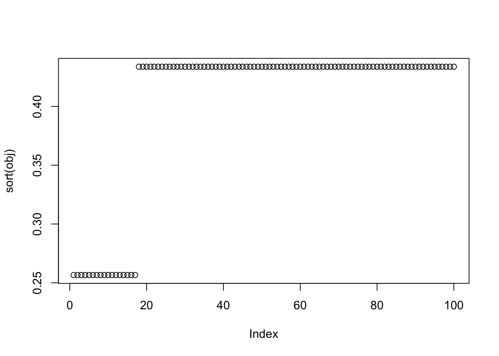
plot(sort(obj[obj>0.4]))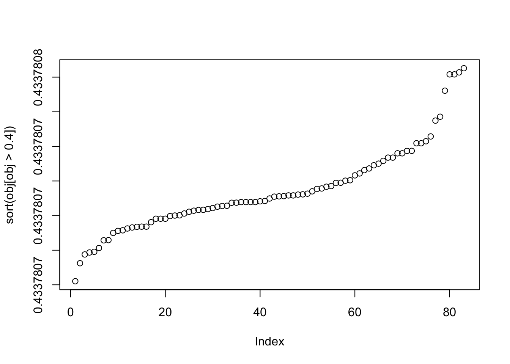
image(Lhat[order(obj,decreasing=TRUE),])
Bifurcating Tree simulations
Here is a simple tree-based simulations; it’s a 4-leaf tree with two bifurcating branches.
# set up L to be a tree with 4 tips and 7 branches (including top shared branch)
set.seed(1)
n = 100
p = 1000
L = matrix(0,nrow=n,ncol=6)
L[1:50,1] = 1 #top split L
L[51:100,2] = 1 # top split R
L[1:25,3] = 1
L[26:50,4] = 1
L[51:75,5] = 1
L[76:100,6] = 1
FF = matrix(rnorm(p*6),nrow=p)
X = L %*% t(FF) + rnorm(n*p,0,0.01)
image(X%*% t(X))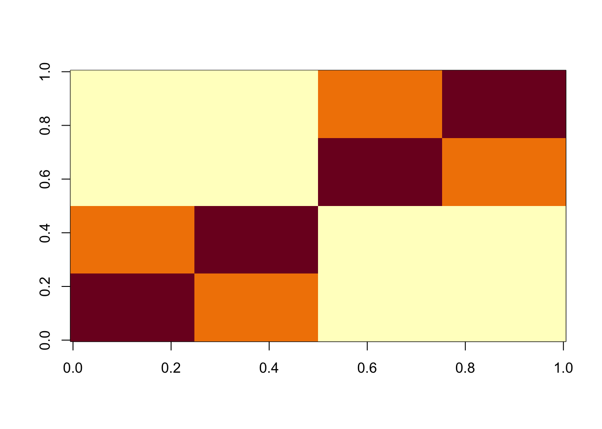
X1 = preprocess(X)
X1 = rbind(rep(1,ncol(X1)), X1)Here I try with 100 random starts - most of them seem to reach an objective corresponding to a binary group, but now it finds both maxima and minima. The highest objectives are the trivial solutions; the next highest are the top split in the tree; the next highest are single branches. The lowest objectives are a bit messy so I’ll look at them in more detail next.
obj = rep(0,100)
Lhat = matrix(nrow=100,ncol=n)
for(seed in 1:100){
set.seed(seed)
w = rnorm(nrow(X1))
for(i in 1:100)
w = fastica_r1update(X1,w)
obj[seed] = compute_objective(X1,w)
Lhat[seed,] = t(X1) %*% w
}
plot(sort(obj))
plot(sort(obj[obj>0.43]))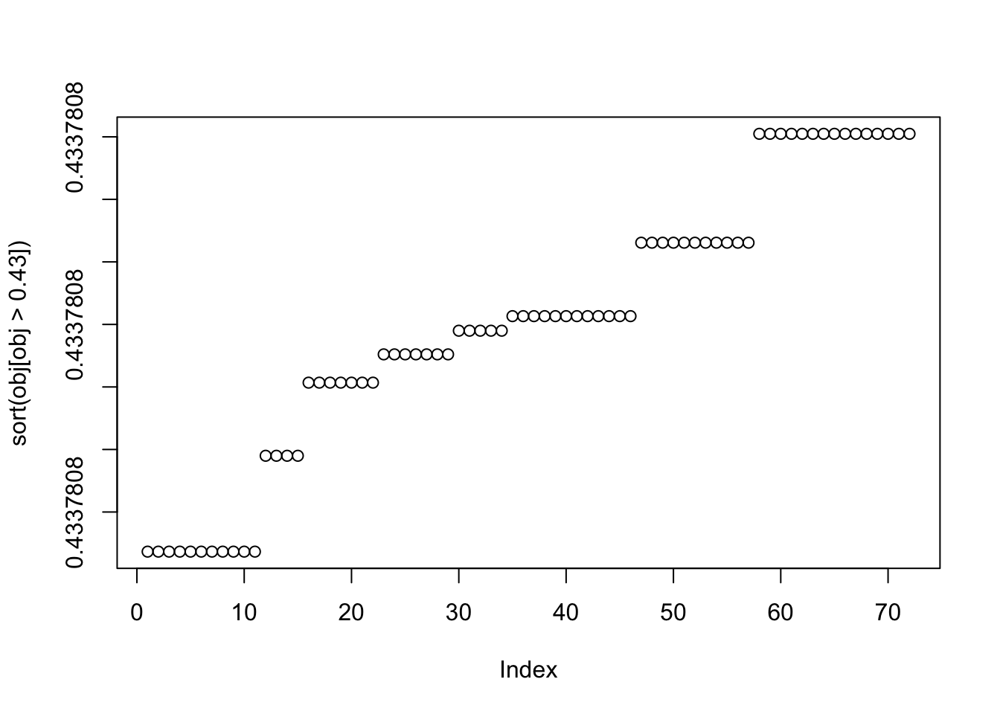
image(Lhat[order(obj,decreasing=TRUE),])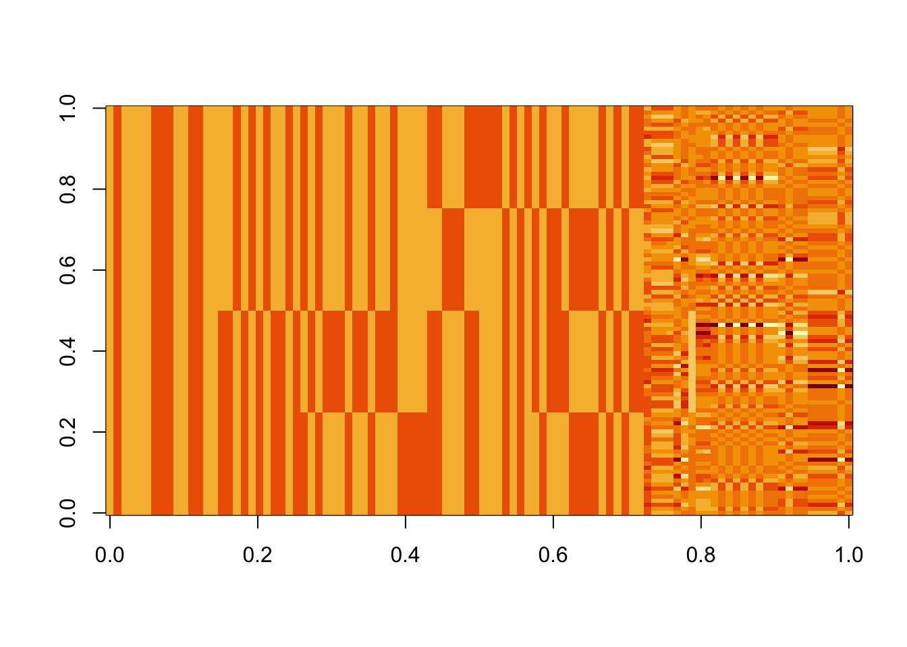
Here is the smallest seed: it does not actually correspond to a binary solution.
seed= order(obj,decreasing=FALSE)[1]
set.seed(seed)
w = rnorm(nrow(X1))
for(i in 1:100)
w = fastica_r1update(X1,w)
plot(t(X1) %*% w)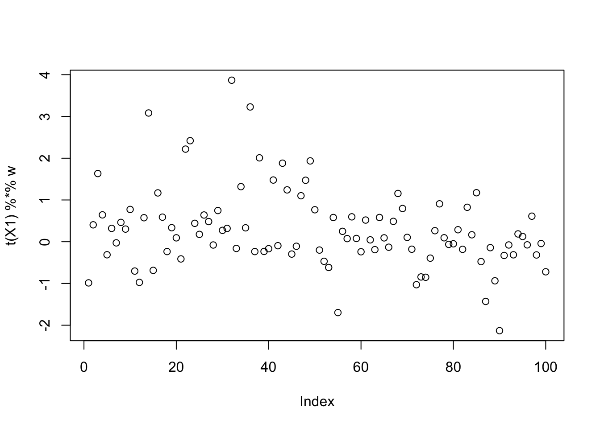
cor(L,t(X1) %*% w) [,1]
[1,] 0.38799777
[2,] -0.38799777
[3,] 0.09839565
[4,] 0.34962558
[5,] -0.21006434
[6,] -0.23795689Here I try preprocessing to fewer PCs to reduce the noise.
X1 = preprocess(X,n.comp=4)
X1 = rbind(rep(1,ncol(X1)), X1)Run 100 seeds: we lose the noisy minimizing solutions.
obj = rep(0,100)
Lhat = matrix(nrow=100,ncol=n)
for(seed in 1:100){
set.seed(seed)
w = rnorm(nrow(X1))
for(i in 1:100)
w = fastica_r1update(X1,w)
obj[seed] = compute_objective(X1,w)
Lhat[seed,] = t(X1) %*% w
}
plot(sort(obj))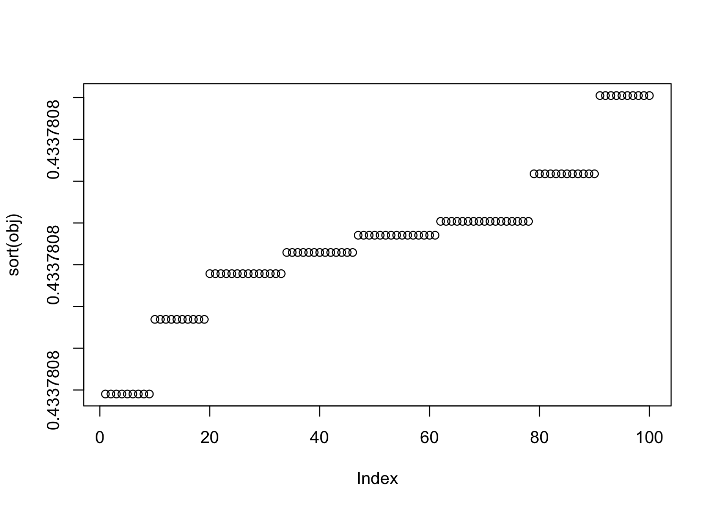
image(Lhat[order(obj,decreasing=TRUE),])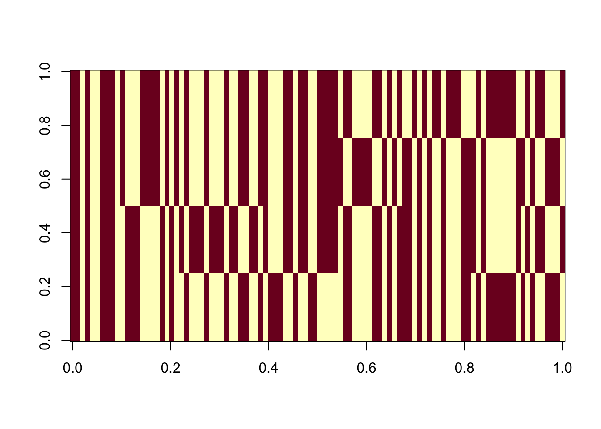
sessionInfo()R version 4.4.2 (2024-10-31)
Platform: aarch64-apple-darwin20
Running under: macOS Sequoia 15.6.1
Matrix products: default
BLAS: /Library/Frameworks/R.framework/Versions/4.4-arm64/Resources/lib/libRblas.0.dylib
LAPACK: /Library/Frameworks/R.framework/Versions/4.4-arm64/Resources/lib/libRlapack.dylib; LAPACK version 3.12.0
locale:
[1] en_US.UTF-8/en_US.UTF-8/en_US.UTF-8/C/en_US.UTF-8/en_US.UTF-8
time zone: America/Chicago
tzcode source: internal
attached base packages:
[1] stats graphics grDevices utils datasets methods base
loaded via a namespace (and not attached):
[1] vctrs_0.6.5 cli_3.6.5 knitr_1.50 rlang_1.1.6
[5] xfun_0.52 stringi_1.8.7 promises_1.3.3 jsonlite_2.0.0
[9] workflowr_1.7.1 glue_1.8.0 rprojroot_2.0.4 git2r_0.35.0
[13] htmltools_0.5.8.1 httpuv_1.6.15 sass_0.4.10 rmarkdown_2.29
[17] evaluate_1.0.4 jquerylib_0.1.4 tibble_3.3.0 fastmap_1.2.0
[21] yaml_2.3.10 lifecycle_1.0.4 whisker_0.4.1 stringr_1.5.1
[25] compiler_4.4.2 fs_1.6.6 Rcpp_1.0.14 pkgconfig_2.0.3
[29] rstudioapi_0.17.1 later_1.4.2 digest_0.6.37 R6_2.6.1
[33] pillar_1.10.2 magrittr_2.0.3 bslib_0.9.0 tools_4.4.2
[37] cachem_1.1.0